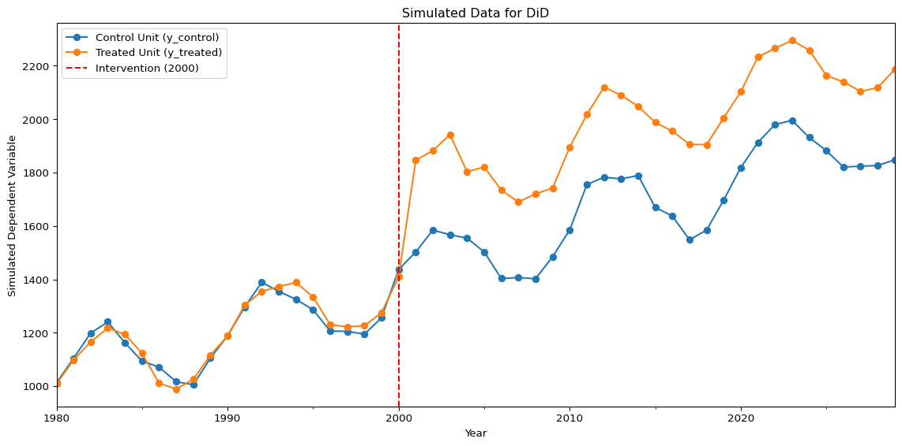
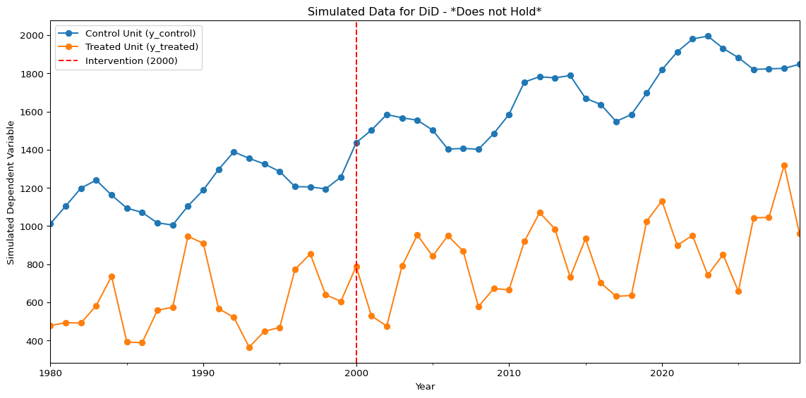

2 Difference in Differences
Difference in Differences (DiD) is a widely used econometric technique for estimating causal effects when randomized experiments are not feasible. It is particularly useful in policy analysis, economics, and social sciences to evaluate the impact of a treatment or intervention over time. Essentially, the DiD approach compares the changes in outcomes over time between a group that is exposed to a treatment (the treatment group) and a group that is not (the control group). The key idea is to control for unobserved factors that are constant over time and for common trends affecting both groups. An excellent introduction to the method can be found in (Cunningham, 2021).
2.1 The DiD Estimator
Suppose we observe two groups over two periods: before and after a treatment is implemented. The DiD estimator is calculated as:
\[ \hat{\delta}^{t,c} = (Y_{post}^t - Y_{pre}^t) - (Y_{post}^c - Y_{pre}^c) \tag{2.1}\]
where:
- \(Y_{post}^t\): Average outcome for the treatment group after the intervention
- \(Y_{pre}^t\): Average outcome for the treatment group before the intervention
- \(Y_{post}^c\): Average outcome for the control group after the intervention
- \(Y_{pre}^c\): Average outcome for the control group before the intervention
This double differencing removes biases from permanent differences between the groups and from trends that affect both groups equally and can be seen as the average treatment effect , defined as
\[ ATT = E[Y^{(1)} - Y^{(0)} | D=1] \tag{2.2}\]
where \(Y^{(1)}\) would be the potential outcome if treated, \(Y^{(0)}\) the potential outcome if not treated, and \(D\in\{0,1\}\) the treatment indicator, with \(D=1\) if treated and \(D=0\) if not. So it’s the expected treatment effect for the units that actually received the treatment.
2.1.1 Estimation
DiD models are often estimated using regression analysis, typically with a specification like:
\[ Y_{it} = \alpha + \beta \text{Post}_t + \gamma \text{Treat}_i + \delta (\text{Post}_t \times \text{Treat}_i) + \epsilon_{it} \]
where:
- \(Y_{it}\): Outcome for unit \(i\) at time \(t\)
- \(\text{Post}_t\): Indicator for the post-treatment period
- \(\text{Treat}_i\): Indicator for the treatment group
- \(\delta\): The DiD estimator (treatment effect)
2.2 Assumptions
The main identifying assumption of DiD is the parallel trends assumption: in the absence of treatment, the average change in the outcome would have been the same for both groups. If this assumption holds, the DiD estimator provides an unbiased estimate of the treatment effect.
A nice way to see this is by working with (Equation 2.1), expanding it to
\[ \hat{\delta}^{t,c} = (E[Y^t|post]- E[Y^t|pre]) - (E[Y^c|post]- E[Y^c|pre]) \]
After some algebra, we can end up with this expression:
\[ \hat{\delta}^{t,c} = (E[Y^{t,1}|post]- E[Y^{t,0}|post]) + [E[Y^{t,0}|post] - E[Y^{t,0}|pre]] - [E[Y^{c,0}|post] - E[Y^{c,0}|pre]] \]
So, in this decomposition, we can see that the first term corresponds to the ATT estimator (Equation 2.2). Please note that the superscripts denote whether the group corresponds to the treated (\(t\)) or control (\(c\)), and whether it was treated (1) or not (0).
But the second and third terms get cancelled out if the parallel trends assumption holds, basically because it’s saying that if the group that received the treatment and the group that didn’t wouldn’t receive the treatment, then both would be equal before and after the treatment. So the terms would be cancelled out, and we would only have the ATT.
A popular way to validate this assumption is to use a parallel trend plot. This visualization allows us to evaluate how the dependent variable evolves for the control and treatment groups before and after the treatment. An example with simulated data can be found in Figure 2.1, where we can see that both control and treatment units behave similarly before the treatment (denoted by a vertical red dotted line) but differ after it. On the other hand, Figure 2.2 is an example of a plot where the assumption does not hold, because the trends for the two groups are not parallel before the treatment. Meaning that the groups are not comparable.

2.3 Extension: Staggered DID
In many empirical applications, treatments are not implemented at the same time for all treated units. Instead, different units receive the treatment at different points in time—a situation known as staggered adoption. The standard two-period DiD framework does not account for this complexity, so extensions are needed.
2.3.1 Estimation
A common approach is to use a two-way fixed effects (TWFE) regression:
\[ Y_{it} = \alpha_i + \lambda_t + \delta D_{it} + \epsilon_{it} \]
where:
- \(Y_{it}\): Outcome for unit \(i\) at time \(t\)
- \(\alpha_i\): Unit fixed effects
- \(\lambda_t\): Time fixed effects
- \(D_{it}\): Indicator for whether unit \(i\) is treated at time \(t\)
- \(\delta\): Average treatment effect
2.3.2 Limitations and Recent Advances
Recent research, mainly pioneered by the decomposition demonstrated in (Goodman-Bacon, 2021), has shown that the TWFE estimator can be seen as a weighted average of all potential 2x2 DD estimates, where weights are based on both group sizes and variance in treatment. However, this decomposition revealed that TWFE can produce biased estimates when treatment effects are heterogeneous across groups or over time in a staggered design. This is because the estimator may compare already-treated units to newly-treated units, contaminating the control group. Also, it assumes that groups in the middle of the panel should be weighted more than those at the end.
To address these issues, alternative estimators have been developed by different authors. However, in this paper, we will be focusing on the proposal from (Callaway & Santa’Anna, 2021), who propose a reliable way to estimate staggered DiD.
2.4 Extensions to covariates
The standard parallel trends assumption can be restrictive. In many settings, it may be more plausible to assume conditional parallel trends: the trends between the treated and control groups would be parallel, conditional on a set of covariates \(X\).
Including covariates can thus strengthen the validity of the DiD design. In a traditional regression framework, this is done by simply adding the covariates \(X_{it}\) to the estimation equation:
\[ Y_{it} = \alpha + \beta \text{Post}_t + \gamma \text{Treat}_i + \delta (\text{Post}_t \times \text{Treat}_i) + \theta' X_{it} + \epsilon_{it} \]
This model is often estimated as a fixed-effects model (similar to the TWFE specification) to control for time-invariant unobservables:
\[ Y_{it} = \alpha_i + \lambda_t + \delta D_{it} + \theta' X_{it} + \epsilon_{it} \]
A limitation of this approach is that it assumes the covariates \(X_{it}\) have a linear and additive effect on the outcome \(Y_{it}\). If the true relationship is non-linear or involves complex interactions, this model is misspecified, and the estimate of \(\delta\) can be biased.
This limitation provides a key motivation for using machine learning. The Double Machine Learning (DML) framework, as we will discuss in the next chapter, is designed to overcome this exact problem. It allows us to control for a rich set of covariates \(X_{it}\) in a flexible, non-parametric way, thereby avoiding the biases associated with model misspecification.
However, the practitioner must be careful when including covariates as might introduce confounding or collider bias.